Madeira: zelený klenot Atlantského oceánu
Madeira
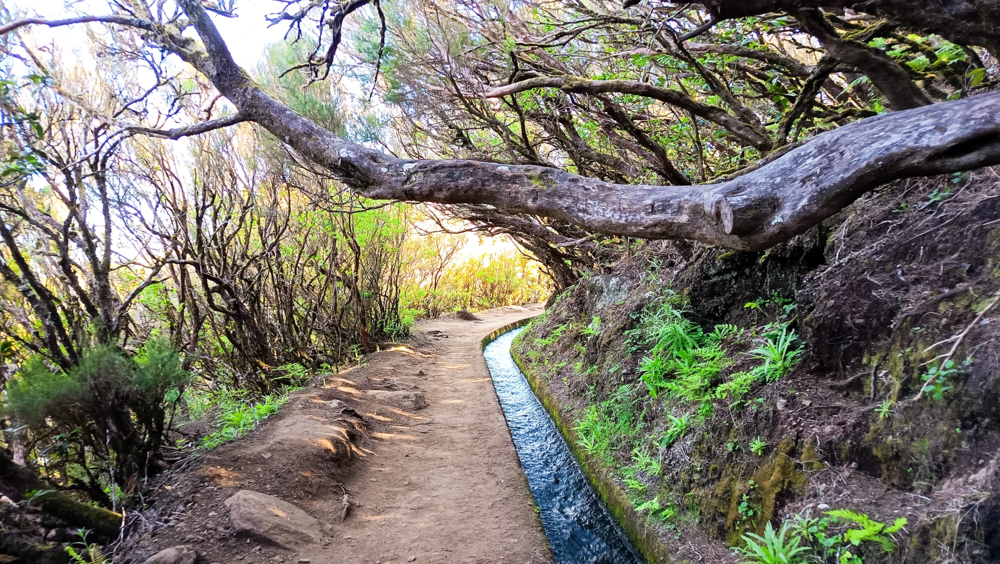
Madeira je ostrov, kde se dramatické hory setkávají s Atlantským oceánem a kde je každý den plný kontrastů – od levád v horách až po pulzující přístav v Funchalu.
Ani letos nebylo rozhodování o tom, kam vyrazíme na dovolenou, vůbec jednoduché. Ve finále jsme vybíraly mezi třemi destinacemi – Vietnamem, Islandem a Madeirou. Po nedávných událostech ve světě však Vietnam ze seznamu vypadl a ve hře zůstaly už jen dvě možnosti. Která z nich nakonec zvítězila, už asi tušíte.
Na cestu jsme vyrazily se společností Čedok, která nám v poměru cena–výkon vyšla jako nejvýhodnější varianta.
Týden před odjezdem jsem pečlivě sledovala předpověď počasí. Přes den mělo být kolem 22 °C a v noci přibližně 16 °C. Připadalo mi to trochu zvláštní – od subtropického ostrova bych čekala vyšší denní teploty. Na druhou stranu je Madeira obklopená oceánem, který podnebí výrazně ovlivňuje, takže to vlastně dávalo smysl. Pro jistotu jsme si proto do kufrů přibalily spíš teplejší oblečení, ale nechyběly ani plavky.
Po přistání nás přivítalo příjemných 19 °C. Než jsme vůbec stihly dojít z letadla do haly, naše zavazadla už kroužila na pásu. O půl hodiny později, když jsme dorazily na hotel, teploměr ukazoval přes 30 °C. Byl konec května, ale slunce mělo sílu vrcholného léta. Ani krém s faktorem 50 nebyl všemocný.
První věc, které si člověk na Madeiře všimne, jsou chodníky. Často prostě nikam nevedou a náhle končí. Místní jsou na to zvyklí, takže se běžně pokračuje po silnici a pro nás nemístní se hledá jiná cesta podle mapy. Stejně uvolněný přístup panuje i v dopravě. Auta parkují na chodnících i podél silnic, nikdo to příliš neřeší. Přesto tu vládne neuvěřitelný klid – žádné troubení, nadávky ani gestikulace. Prostě „no stress“.
Hotel Jardins d'Ajuda
Naším domovem se stal hotel Jardins d'Ajuda. Na první pohled už má něco za sebou, ale nabízí venkovní i vyhřívaný vnitřní bazén, vířivku a saunu. Snídaně se během týdne nemění, zato večeře byly každý den jiné.
Pokud však dostanete pokoj v prvním patře s balkonem do hlavní ulice, jako jsme měly my, na úplný klid zapomeňte. Zdi působí téměř papírově a je slyšet prakticky všechno.
Den 1: Funchal
Ještě před ubytováním jsme vyrazily pěšky do centra Funchalu. První dojmy? Čistší hlavní město jsem snad nikdy neviděla. Potkaly jsme sotva pár bezdomovců a celé město působí upraveně a příjemně.
Funchal je vystavěný ve svazích, takže kamkoliv se vydáte, čeká vás kopec. Právě to mu dodává jedinečný charakter a nádherné výhledy. Řídit bych tu ale nechtěla. V každém prudším stoupání bych měla strach, že mi auto na stopce zhasne.
Den 2: Machico – Boca do Risco – Porto da Cruz
První turistický den začal ve městě Machico. Odtud jsme se vydaly po levádě směrem do sedla Boca do Risco a následně pokračovaly po pobřežní stezce až do Porto da Cruz. Celkem nás čekalo přibližně 13 kilometrů.
Odměnou v cíli byla návštěva místní palírny a ochutnávka rumu nebo tradičního nápoje poncha. Ten se připravuje z bílého rumu, čerstvě vymačkaného citronu a dalších druhů ovoce. Pokud budete mít možnost, určitě ochutnejte. A pokud si chcete něco přivézt domů, kupte si ponchu právě tady. V obchodě už to jednoduše není ono.
Den 3: Fanal – Porto Moniz
Dnešní trasa vedla po PR14 Levada dos Cedros z oblasti Fanal směrem ke Curral Falso. Přibližně osm kilometrů dlouhá cesta začínala téměř kilometrovým sestupem po schodech. Dole už se nohám opravdu moc nechtělo.
Pak následovala příjemná rovina podél levády a několik blátivých úseků. Čekala jsem, že nás alespoň trochu zastihne déšť, ale počasí zůstalo perfektní.
Na konci nás vyzvedl řidič a odvezl do Porto Moniz k proslulým lávovým jezírkům, která byla překvapivě poloprázdná. Cestou zpět jsme se zastavili u vodopádů a nakonec jsme zamířili ještě na místní hřbitov.
Možná trochu morbidní zastávka, ale velmi zajímavá. Místní pohřební kultura je úplně jiná než u nás. Na mnoha místech jsou rodinné krypty, ve kterých jsou za betonovými deskami umístěny rakve ve více úrovních nad sebou. Některé krypty byly dokonce otevřené, takže jsme mohly nahlédnout dovnitř.
Den 4: Santana
Ráno už jsme začínaly cítit předchozí kilometry v nohách. Čekala nás ale jednodušší trasa po PR18 Levada do Rei. Celkem asi 5,3 km tam a zpět.
Cesta vede pod vodopádem, takže lehká sprška je téměř jistá. Bez pláštěnky se to ale dá zvládnout. Součástí trasy je i krátký úsek eukalyptovým lesem.
Po túře jsme zamířily do Santany, známé svými tradičními doškovými domky. Těch je zde dnes už jen několik, ale stále patří mezi symboly ostrova. Tržiště bylo během naší návštěvy spíše komorní, zato v jednom z domků prodávali semínka a sazenice místních rostlin.
Následovala cesta nejdelším tunelem na ostrově a zasloužený odpočinek v hotelovém bazénu s pivem v ruce.
Den 5: Poloostrov São Lourenço
Dnes nás čekala jedna z nejznámějších tras ostrova – PR8 Vereda da Ponta de São Lourenço.
Protože jsem byla spálená už od prvního dne, dlouhý rukáv byl nutností. Na otevřeném poloostrově navíc fouká opravdu silný vítr a člověk má pocit, že ho každou chvíli odnese.
Výhledy na Atlantik, ostrovy Desertas a Porto Santo jsou ale naprosto fascinující. Krajina zde připomíná úplně jiný svět a geologické útvary jsou skutečně jedinečné.
Po zhruba třech kilometrech dorazíte k restauraci Casa do Sardinha, kde vás čeká možná nejdražší toaleta na ostrově za 1€. Jinak se po cestě moc schovat není kam.
Po návratu jsme se zastavily v Machicu, kde právě vrcholily květinové slavnosti. A samozřejmě nesměla chybět ani koupel v oceánu na místní písečné pláži. Pro odvážné, oceán měl 19 °C.
Den 6: Alecrim, Fanal a Câmara de Lobos
Bolesti nohou jsou pryč. Jsme jako znovuzrozené.
Dnes nás čekala krátká trasa PR6.2 Levada do Alecrim. Po několika dnech jsme zjistily, že všechny levády začínají být trochu podobné, takže už jsme si cestu užívaly hlavně jako pohodovou procházku k malému vodopádu.
Poté jsme zamířily do Fanalu, kde se nachází slavný vavřínový les zapsaný na seznamu UNESCO. Pro neznalce, jako jsem byla já, jde o stromy příbuzné našemu dobře známému bobkovému listu. Když se mezi jejich pokroucenými korunami převalují mraky a mlha, celé místo působí téměř nadpřirozeně. Není proto divu, že se k němu váže řada místních legend. Jedna z nich říká, že pokud v lese uslyšíte své jméno, nikdy se nesmíte otočit – jinak už prý cestu zpět nenajdete.
Poslední zastávkou bylo rybářské městečko Câmara de Lobos. Dříve mělo pověst chudší části ostrova, dnes je to jedno z nejmalebnějších míst na Madeiře. Maloval zde dokonce Winston Churchill.
Navštívily jsme i bar příbuzných (tety) Cristiana Ronalda, kde najdete jeho fotografie, dresy a další memorabilia. Ochutnaly jsme také víno CR7. Někomu připomíná medovinu, mně saké. Každý si v něm najde něco jiného. každopádně stojí 24€.
Nechyběly ani místní speciality za 4€, včetně opravdu netradičních kombinací, jako je směs černého piva, vína a čokolády. Překvapivě chutná lépe, než zní.
Den 7: Monte a Údolí jeptišek
Poslední den patřil nejikoničtějším místům ostrova.
Lanovkou jsme vyjely do Monte a navštívily zdejší tropickou zahradu. Milovníci rostlin budou nadšení – je to skutečná pastva pro oči.
Na oběd jsme zamířily do restaurace Quinta Estação v Santo António. Čekalo nás kompletní menu od batátového chleba s česnekovým máslem přes steak z tuňáka až po dezert z marakuji a kávu. Mezitím nesmělo chybět stolní a ani madeirské víno.
Po vydatném obědě, několika sklenkách vína a dalších kilometrech na klikatých horských silnicích, které už nám začínaly dávat zabrat, jsme dorazily do Curral das Freiras neboli Údolí jeptišek. Čekala nás ochutnávka pěti různých lihových výrobků z jedlých kaštanů a následně zastávka na vyhlídce Eira do Serrado. Výhled na údolí ukryté mezi horskými štíty byl naprosto fantastický a stál za každou další serpentinu.
Večer jsme se ještě naposledy zastavily v Câmara de Lobos na jedno „rozlučkové kolečko“ v baru u Ronaldovy tety. Po návratu na hotel už nás čekalo jen balení kufrů, poslední kontrola suvenýrů a pomalé smiřování se s tím, že naše madeirské dobrodružství se chýlí ke konci.
Den 8: Nekonečné čekání na letišti
Původně jsem chtěla skončit sedmým dnem, ale osmá kapitola si zaslouží vlastní odstavec.
Cestou na letiště jsme zjistily, že naše letadlo z Brna ještě ani neodletělo. Údajně kvůli počasí. Z plánovaného odletu v 10:55 se postupně stalo 18:20, pak 20:00 a nakonec 21:20.
Přitom jiná letadla během dne normálně přistávala i odlétala.
Společnost nám alespoň poskytla vouchery v hodnotě 30 € na osobu. Celkem jsme na letišti strávily více než deset hodin. Domů jsme dorazily až po čtvrté hodině ranní.
Takový konec dovolené jsme si úplně nepředstavovaly, ale i to k cestování občas patří.
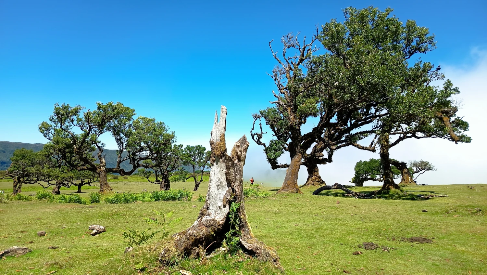
Ostrov hor, oceánu a věčného jara
Madeira je portugalský ostrov ležící v Atlantském oceánu přibližně 1 000 kilometrů jihozápadně od pevninského Portugalska. Společně s několika menšími ostrovy tvoří autonomní oblast Portugalska. Hlavním městem je Funchal, kde žije přibližně třetina obyvatel ostrova.
Madeira je známá svou rozmanitou přírodou, strmými horskými masivy, hlubokými údolími, útesy a rozsáhlou sítí levád – zavlažovacích kanálů, podél kterých dnes vedou oblíbené turistické trasy. Díky subtropickému klimatu zde panují příjemné teploty po celý rok, a proto je ostrov často označován jako „ostrov věčného jara“.
Velkou část území pokrývají vavřínové lesy Laurisilva, které jsou zapsány na seznamu světového dědictví UNESCO. Madeira je proslulá také pěstováním exotického ovoce, květinovými slavnostmi, tradičním madeirským vínem a místním rumem, ze kterého se připravuje oblíbený nápoj poncha.
Ostrov má rozlohu přibližně 740 km² a žije zde kolem 250 tisíc obyvatel. Přestože je Madeira poměrně malá, nabízí neuvěřitelnou rozmanitost krajiny – od horských vrcholů sahajících do výšky přes 1 800 metrů nad mořem až po vulkanické pobřeží a přírodní lávová jezírka. Díky bezpečnosti, čistotě a množství turistických tras patří mezi nejoblíbenější destinace pro milovníky aktivní dovolené v Evropě.
👥 Populace
Madeira má přibližně 250 000 obyvatel a většina z nich žije na jižním pobřeží ostrova. Největším městem je Funchal, který je zároveň hlavním městem autonomního regionu Madeira. Obyvatelé jsou převážně Portugalci a místní kultura je silně ovlivněna portugalskou tradicí.
🛡️ Bezpečnost
Madeira patří mezi velmi bezpečné destinace v Evropě. Kriminalita je na Madeiře velmi nízká. Přesto je zde podle místních dlouhodobým problémem domácí násilí. Každý týden zde údajně zemře jedna žena v důsledku domácího násilí. Ženy často končí s rozbitými čelistmi nebo zlomenými kostmi po celém těle.
Největší opatrnost je potřeba při turistice v horách, kde může být počasí rychle proměnlivé.
🛐 Náboženství
Dominantním náboženstvím je římskokatolické křesťanství, podobně jako v celém Portugalsku. Na ostrově se koná mnoho tradičních náboženských slavností a festivalů spojených s místními kostely.
Mladí lidé se od toho postupně odvracejí a nejsou už tak nábožensky založení jako dříve.
🎓 Školství
Základní vzdělávání funguje podobně jako u nás – je rozdělené na první a druhý stupeň. Pro děti je zajištěna autobusová doprava, kterou dotuje stát.
Školství na Madeiře funguje podle portugalského vzdělávacího systému. Na ostrově se nachází například Univerzita Madeiry ve Funchalu. Vzdělání je povinné do 18 let, takže i střední škola a většina obyvatel má přístup ke kvalitnímu základnímu i střednímu vzdělání.
💼 Ekonomika a zaměstnanost
Důležitou roli hraje zemědělství, zejména pěstování banánů, cukrové třtiny a vinné révy. Významný je také export slavného madeirského vína.
Hlavním pilířem ekonomiky je turismus, který zaměstnává velkou část místních obyvatel.
🪙 Chudoba
Stejně jako v některých jiných regionech Portugalska se i na Madeiře objevují sociální rozdíly. Turismus však pomáhá ekonomice a poskytuje pracovní příležitosti mnoha místním obyvatelům.
👵 Důchody
Starší obyvatelé často žijí v menších komunitách nebo rodinách, kde je běžná silná mezigenerační podpora.
Do důchodu je možné odejít už po 15 odpracovaných letech, ovšem za cenu výrazně nižší penze.
🏡 Bydlení
V minulosti lidé bydleli v tradičních doškových domcích, které často tvořila jediná místnost. V takovém prostoru žilo i šest osob. Neměli elektřinu, svítili si svíčkami, koupali se v levádách a jednoduchou venkovní kuchyň měli vedle domu.
Nyní na ostrově najdeš jak moderní byty ve městech, tak tradiční domky v horských vesnicích. Vzhledem k omezenému prostoru a popularitě turismu jsou ceny nemovitostí v některých oblastech poměrně vysoké.
🏥 Zdravotnictví
Zdravotnictví podle místních zaostává za středoevropským standardem zhruba o dvě desetiletí a čekání na urgentním příjmu může trvat i sedm hodin.
Na ostrově funguje několik nemocnic a klinik a jedna velká nemocnice se od roku 2021 stále staví a zatím nejsou vyhlídky konce.
🚘 Doprava
Hlavní doprava na ostrově probíhá autem nebo autobusy. Silnice jsou kvalitní, ale často velmi klikaté a vedou horským terénem. Madeira má také mezinárodní letiště Cristiano Ronaldo nedaleko Funchalu.
🌱 Ekologie
Madeira je známá svou bohatou přírodou a chráněnými oblastmi. Velká část ostrova je součástí přírodního parku Madeira a unikátní vavřínové lesy Laurisilva jsou zapsané na seznamu UNESCO.
🎭 Kultura a zvyky
Kultura je silně spojena s portugalskými tradicemi, hudbou a festivaly. Velmi známý je například květinový festival ve Funchalu nebo novoroční ohňostroj, který patří mezi největší na světě.
🥧 Speciální jídla a pití
Mezi typická jídla patří espetada (hovězí maso na špízu), espada com banana (hlubokomořská ryba s banánem) nebo bolo do caco, tradiční česnekový chléb a taky Prego (hovězí maso v batátovém chlebu). Velmi známé je také sladké madeirské víno a nesmíme zapomenou na Ponchu (bílý rum a do něho vymačkný citron nebo jiné ovoce).
🎩 Speciální rozdíly oproti ČR
Na rozdíl od Česka má Madeira subtropické klima s velmi mírnými zimami. Příroda je zde mnohem divočejší a horský terén je často dramatický s hlubokými údolími a vysokými útesy. Tempo života je také klidnější a více přizpůsobené turistice.
🌟 Co určitě nevynechat
- Curral das Freiras (Údolí jeptišek) — to je jedno z nejikoničtějších míst na Madeiře a rozhodně doporučuju
- vyhlídku Pico do Arieiro — ikonické horské výhledy nad mraky
- vavřínové lesy ve Fanalu
- lanovku do Monte a tropické zahrady
- tradiční tobogány z Monte — toto je hodně drahá atrakce, teď za 30€/os a jede se 2 km
- Mercado dos Lavradores ve Funchalu — tržnice s ovocem, květinami, rybami a místní atmosférou, ale silene drahe
- muzeum CR7 pro fanoušky Cristiana Ronalda a kousek od muzea má postavený barák, který ze satelitních snímků připomíná tvar sedmičky
🧠 Zajímavosti
- v oblasti Ponta do Sol svítí slunce přibližně 360 dní v roce, díky čemuž patří k nejslunnějším místům na ostrově
- Madeira má zhruba 130 tunelů o celkové délce přes 80 kilometrů. Nejdelším z nich je Túnel do Faial Cortado, který měří 3,168 km
- na některé levády je nutné rezervovat vstup předem. Pokud přijedete bez rezervace, nemusí vás na trasu pustit. Turistům cestujícím na vlastní pěst proto doporučuji zjistit si předem, zda není konkrétní leváda zpoplatněná a zda není potřeba vstup rezervovat
- Madeira si vyrábí elektrickou energii sama a je v tomto směru soběstačná. Z pevninského Portugalska sem nevedou žádné podmořské kabely.
- Airbnb je zde výrazně regulováno a v některých oblastech omezeno kvůli snaze kontrolovat turistický ruch.
- místní pivo Coral se vyrábí z českého chmele
💡 Typy před návštěvou země
Počítej s proměnlivým počasím v horách a vezmi si vhodné oblečení na turistiku. Doporučuje se také půjčení auta, které umožní snadno prozkoumat celý ostrov. Pokud plánuješ výlety do hor nebo na levády, vyraž brzy ráno, kdy je méně turistů.
⚠️ Malé upozornění pro dobrodruhy: pokud vstoupíte do oblasti se zákazem vstupu a něco se vám stane, nemůžete počítat s tím, že pro vás místní záchranáři automaticky vyrazí. V takových místech se jednoduše nemáte pohybovat.
Galerie
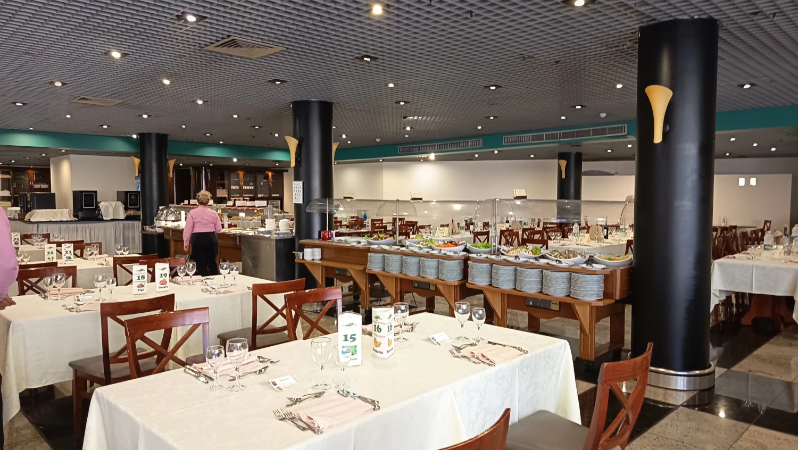
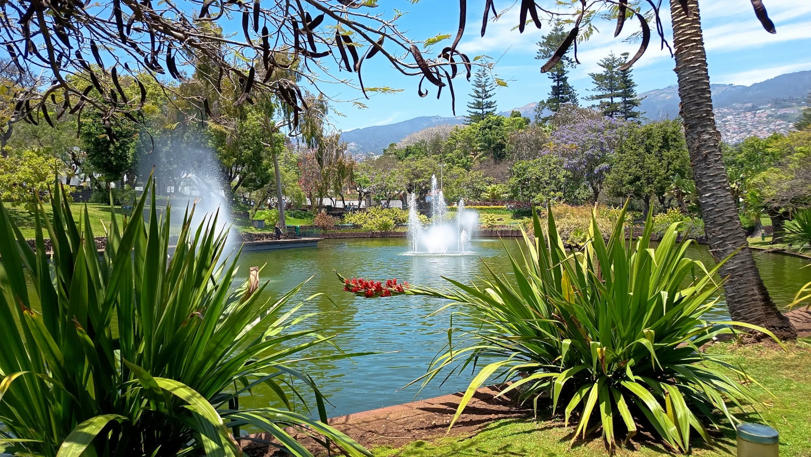
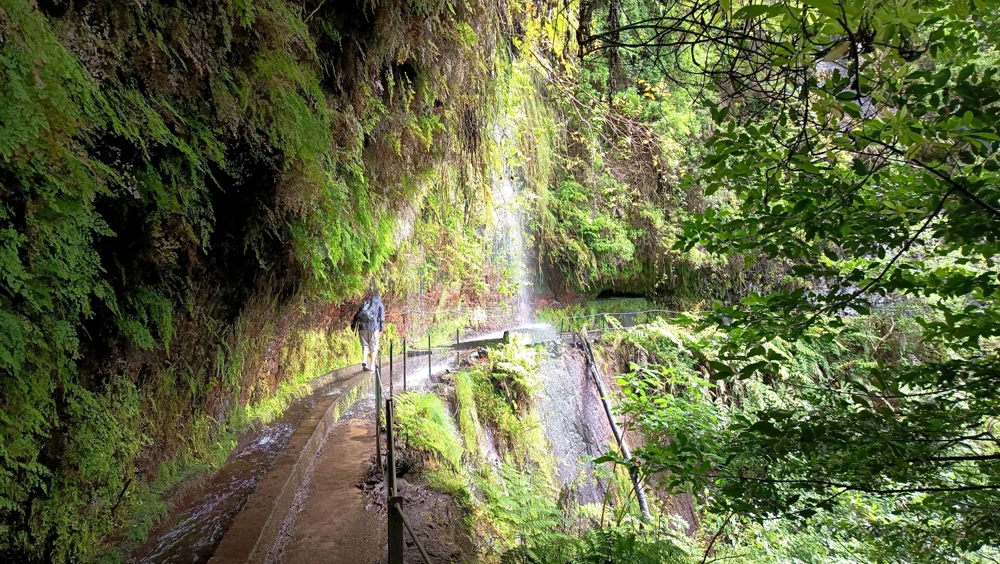
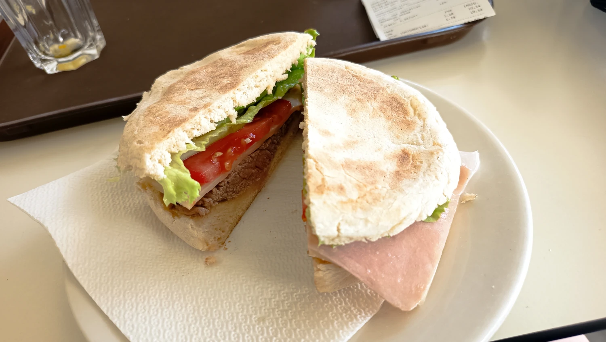
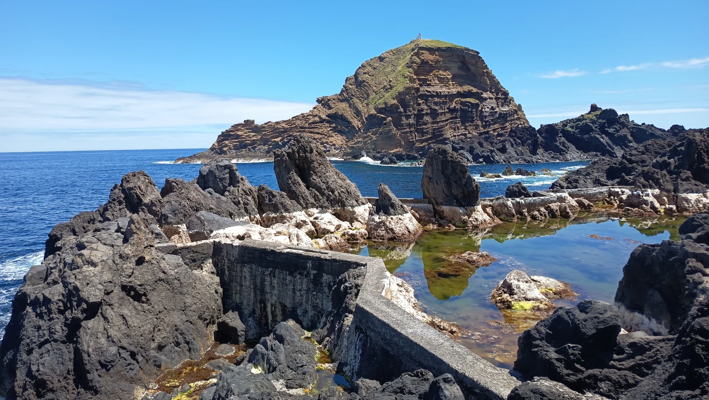
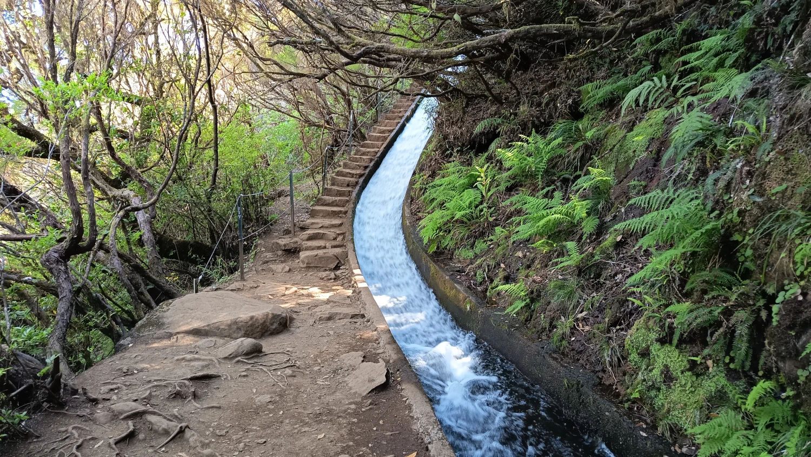
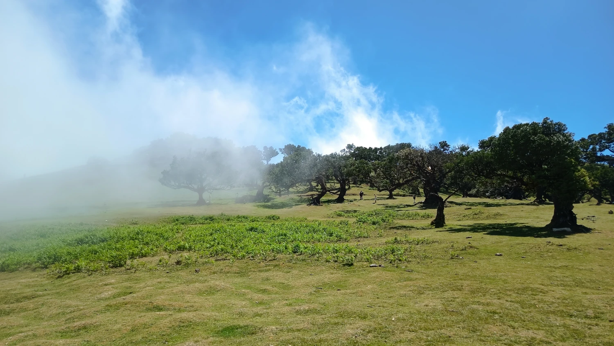
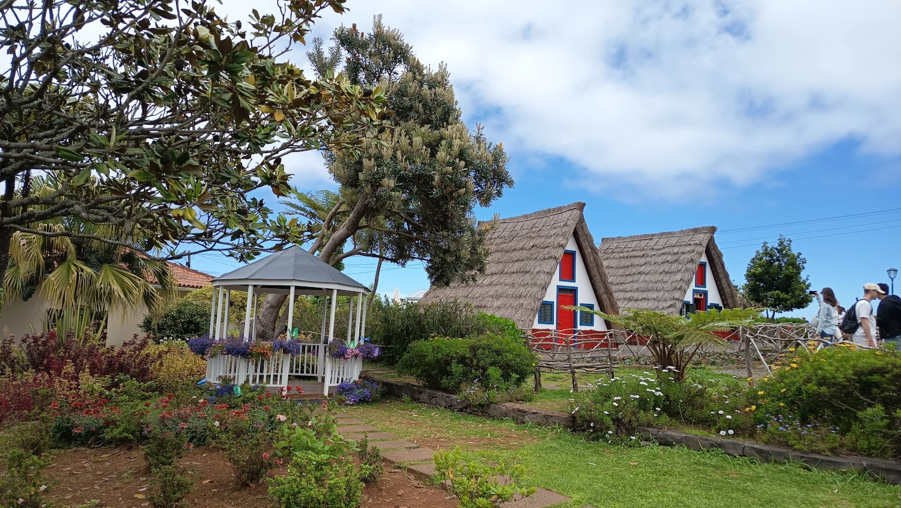
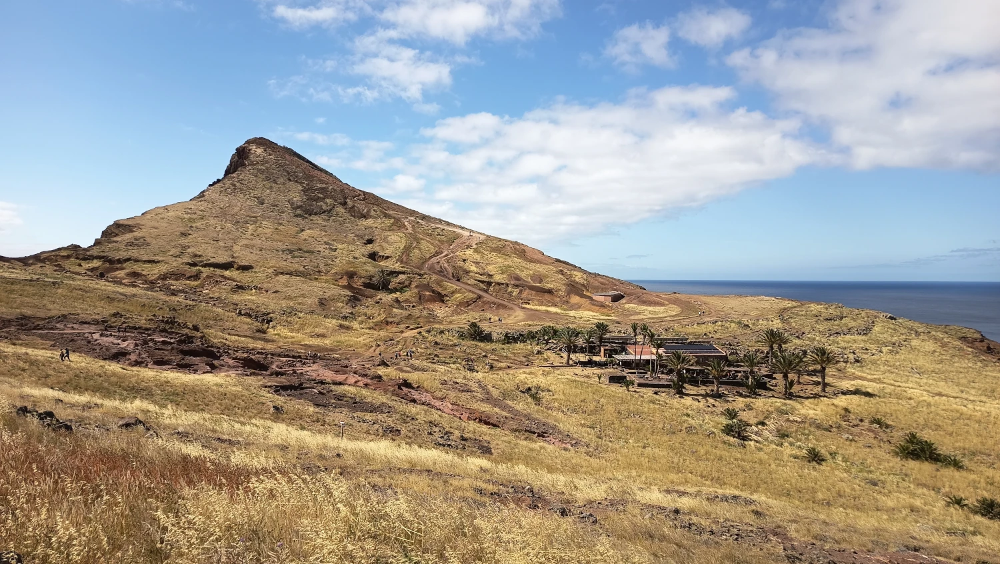
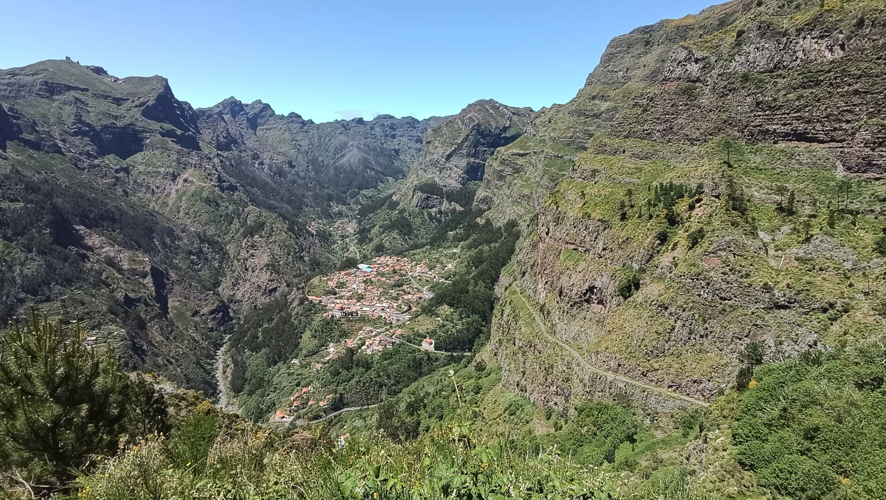
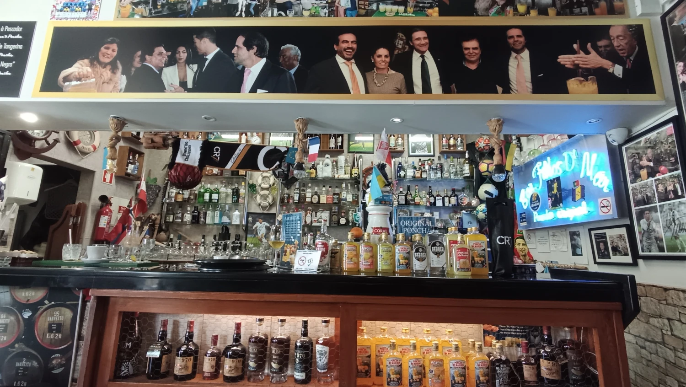
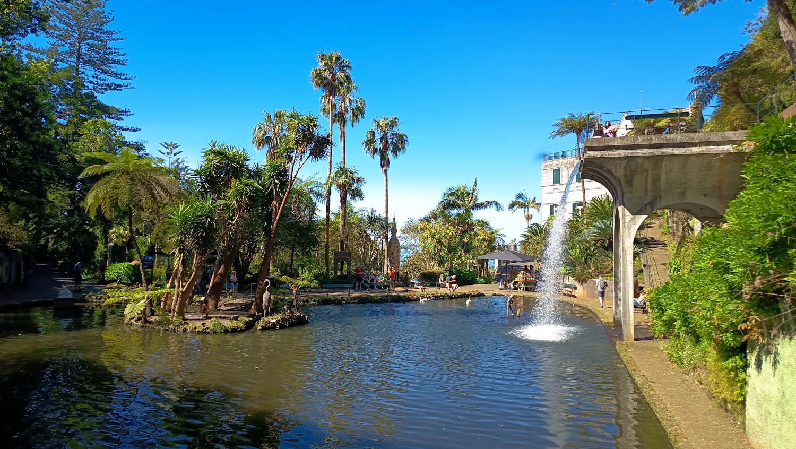